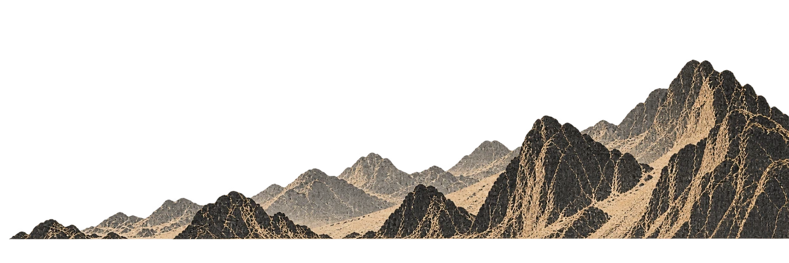
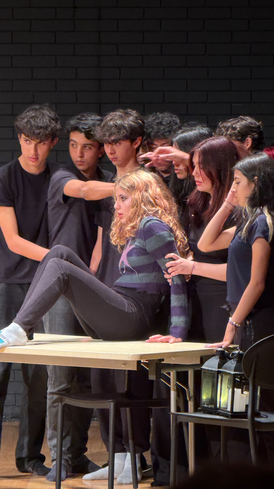
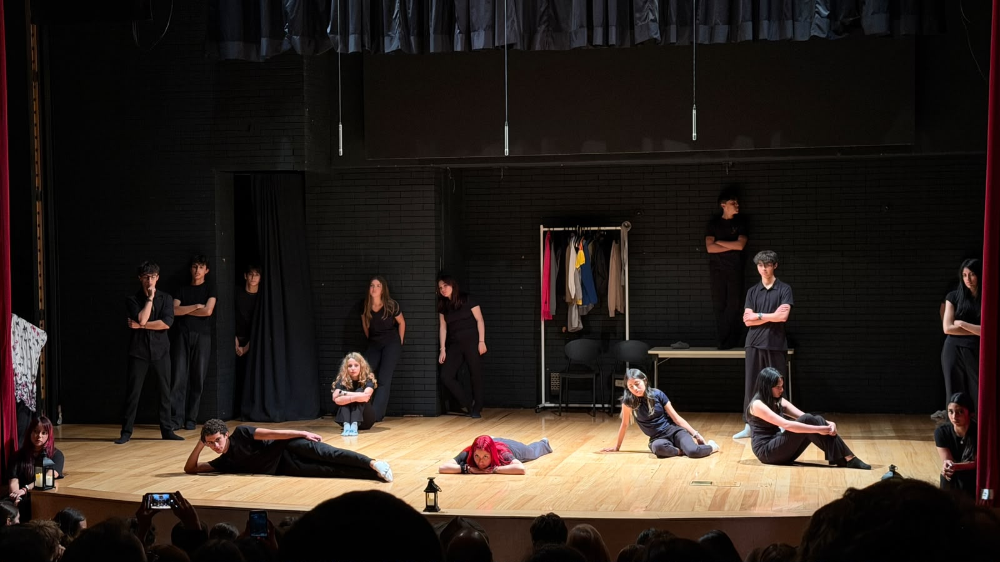
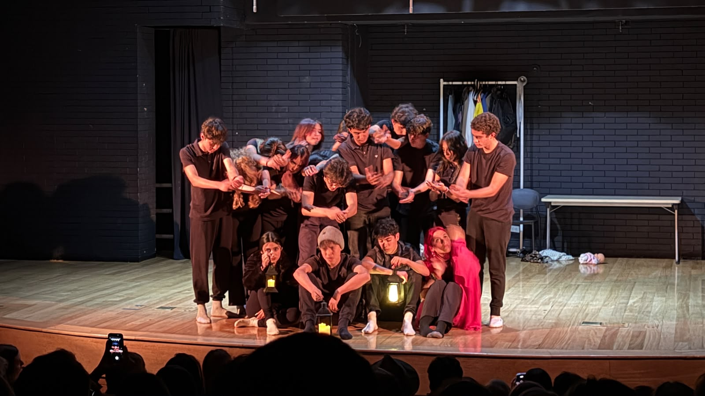
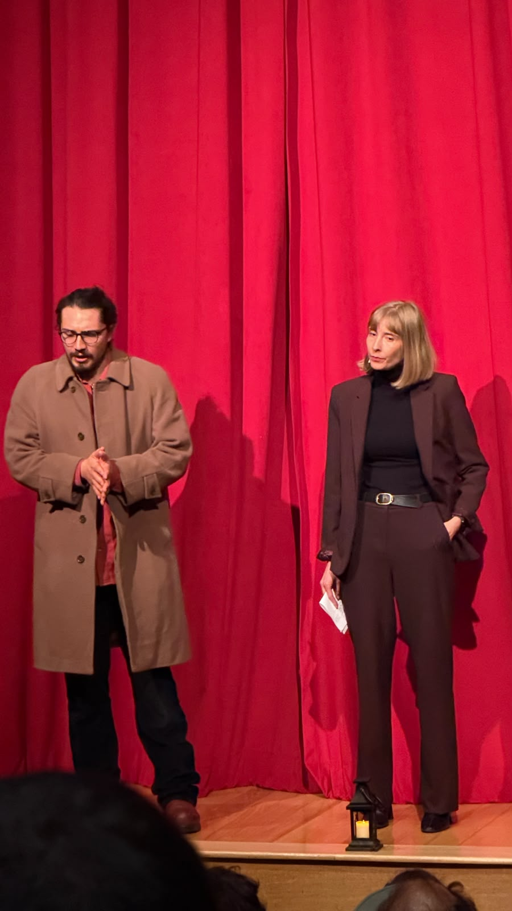
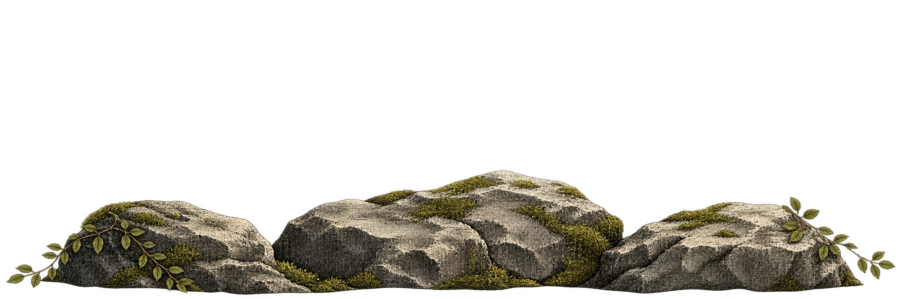

Teatro en francés

Una lengua.
Una obra compartida.
Adaptación y montaje de obras en francés. Un proceso donde la lectura, el cuerpo y la palabra llegan juntos al escenario.
Ver la obra en Creaciones
Del texto
al encuentro.
El trabajo con una lengua también puede tomar la forma de una obra. La adaptación, el ensayo y el montaje permiten explorar el sentido de las palabras desde las acciones, las relaciones y la presencia escénica.
La experiencia con el Liceo Francés reúne a estudiantes alrededor de una creación compartida.
Conversemos sobre un proyecto con tu instituciónProyecto Pasteur
Una propuesta de teatro itinerante: la vida de Louis Pasteur se convierte en un recorrido por pasillos y salones. El público se desplaza con la escena, entre cuadernos de dibujo, cristales, voces y sombras.
El proyecto cruza la creación teatral con preguntas sobre el arte, la ciencia y el cuidado. El idioma se trabaja en el diálogo, el coro y la acción compartida.
Conversemos sobre el proyecto PasteurUna escena
construida entre todos.



